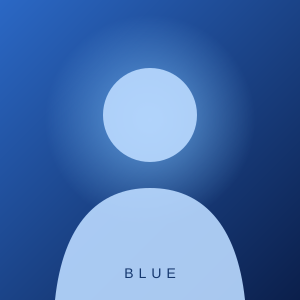

متاح للتواصل
أهلاً بك في مساحتي
Blue ✦
شغوف بالتقنية، أحب اكتشاف الأفكار الجديدة وتحويلها إلى تجارب رقمية. هذه مساحتي الصغيرة على الإنترنت.
تعرف عليّ
نبذة عني
أحب التقنية والتصميم وصناعة الأشياء الرقمية. أتعلم باستمرار، أجرب أفكاراً مختلفة، وأشارك هنا الأشياء التي أعمل عليها وما يلهمني.
ما أعمل عليه
04مشاريعي
تابعني هناك
قناتي على تيليجرام
خلّينا على تواصل.
للتعاون أو مشاركة فكرة أو حتى إلقاء التحية، يسعدني تواصلك.
✉راسلني الآن↗